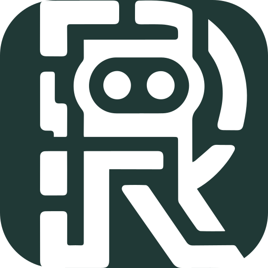

On-device AI
In the Windows preview, choose a profile and select Find recommended model. Review the download size, then choose Download and use. Manage downloaded files and memory from the same settings page.

RoboClipOpen Settings → Providers → Text and select the provider you want to configure. Choose Set as default to use it for custom prompts and actions that use the default provider. An individual action can use a different provider via its Provider tab.
In the Windows preview, choose a profile and select Find recommended model. Review the download size, then choose Download and use. Manage downloaded files and memory from the same settings page.
Start Ollama, LM Studio, or another OpenAI-compatible server on this computer. Select the runtime or enter its loopback address under Local AI server, refresh the model list, and test the connection.
/openai/v1. Enter your deployment name and API key, then select Test connection. Update the endpoint in Settings if you already use Azure AI Foundry.RoboClip keeps provider credentials in your operating system’s credential manager or an encrypted local vault. Read the privacy statement for what each provider receives.
Get an API key from the GIPHY developer dashboard and save it under Settings → Providers → GIF. A GIF action uses your AI provider to generate a short search phrase. RoboClip sends that phrase to GIPHY and loads matching GIFs.